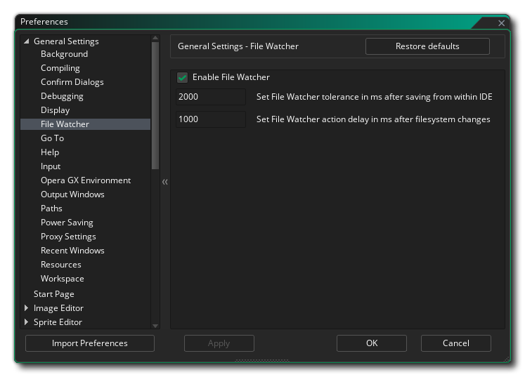

File Watcher Preferences

This section of the preferences contains options for The File Watcher. In general, these settings shouldn't need to be edited, but on some systems - like those that use an HDD as the save drive for the project files - the File Watcher may be informing you of changes when you do things like simply saving the project or whenever you edit any project asset, in which case you may need to change these settings.
The settings available are:
- Enable File Watcher: This can be used to enable or disable the File Watcher system. If this is disabled, the IDE will no longer pick up on any files changed by external sources, so care should be taken when disabling this feature. The File Watcher is enabled by default.
- Set File Watcher tolerance in ms after saving in the IDE: This adjusts the time between saving a file and the file watcher checking for changes. You would adjust this value if you were saving your project and the File Watcher was erroneously appearing saying something had changed, in which case you would increase the delay until the message no longer appears. The default value is 2000ms, but can range from 1ms up to 10,000ms.
- Set File Watcher action delay in ms after filesystem changes: This adjusts the time the File Watcher waits before it takes into account changes in detected in the filesystem. The default value is 1000ms.